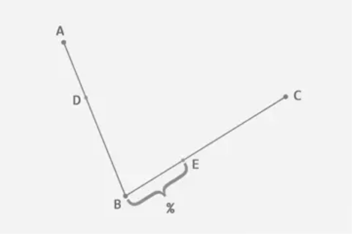
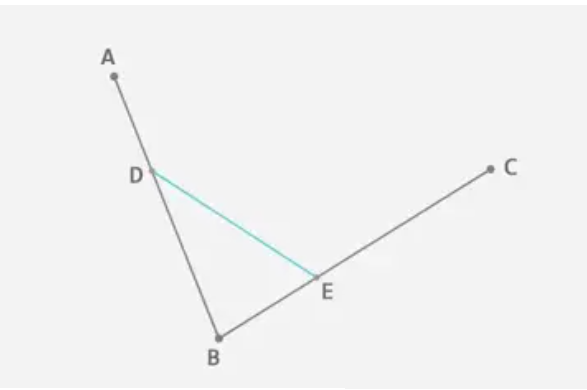
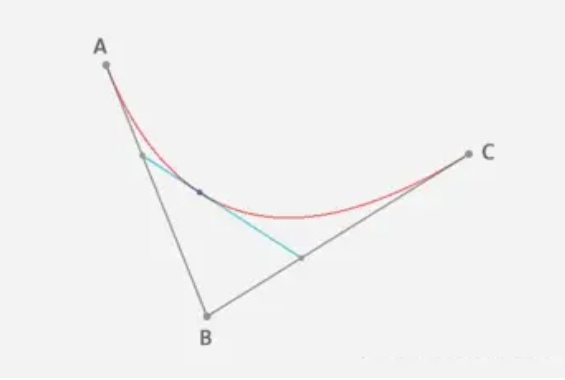
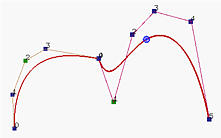
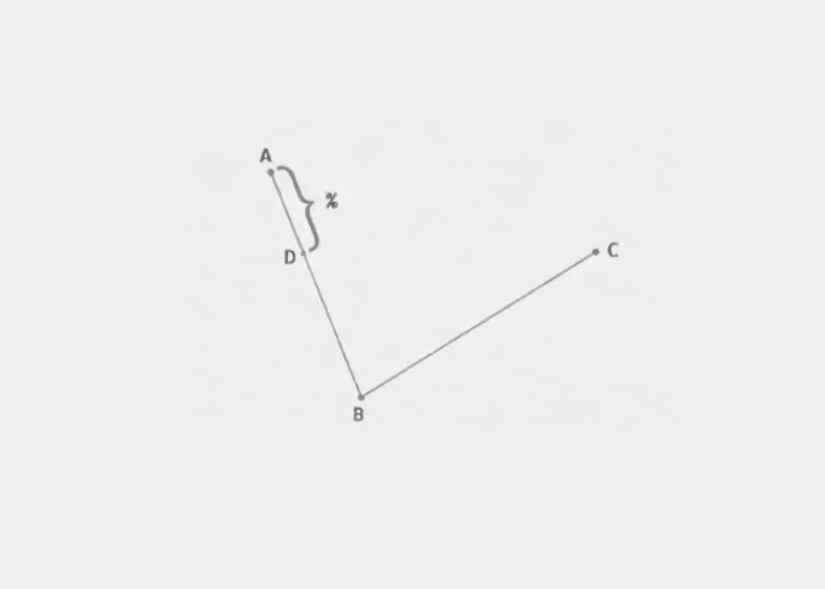
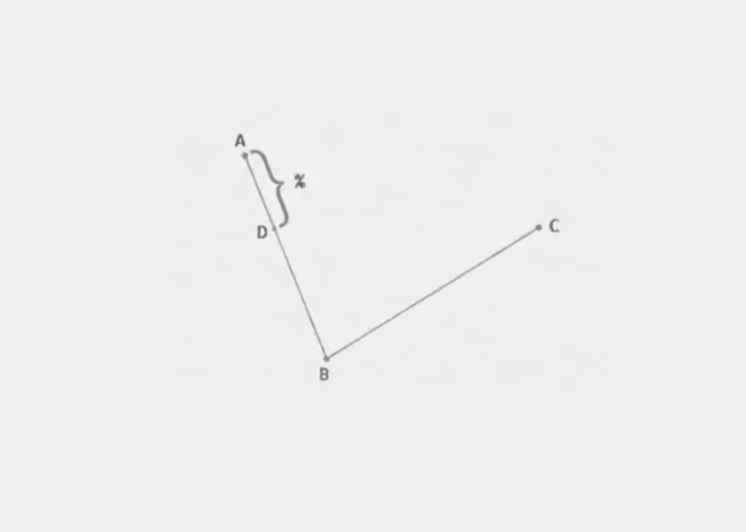
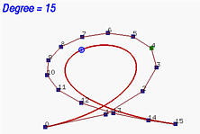
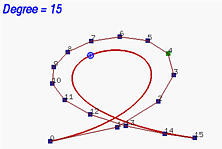

贝塞尔曲线于 1962 年，由法国工程师皮埃尔·贝济埃（Pierre Bézier）所广泛发表，他运用贝塞尔曲线来为汽车的主体进行设计,贝塞尔曲线最初由保尔·德·卡斯特里奥于1959年运用德卡斯特里奥算法开发，以稳定数值的方法求出贝塞尔曲线.
先从几个简单的例子开始：
对于一阶贝塞尔曲线为我们可以看到是一条直线，通过几何知识，很容易根据t的值得出线段上那个点的坐标。
给定点 P 0 P_0 P 0 P 1 P_1 P 1
B ( t ) = P 0 + ( P 1 − P 0 ) t = ( 1 − t ) P 0 + t P 1 , t ∈ [ 0 , 1 ] \mathbf{B}(t)=\mathbf{P}_0+(\mathbf{P}_1-\mathbf{P}_0)t=(1-t)\mathbf{P}_0+t\mathbf{P}_1,t\in[0,1]
B ( t ) = P 0 + ( P 1 − P 0 ) t = ( 1 − t ) P 0 + t P 1 , t ∈ [ 0 , 1 ]
一阶曲线就是很好理解, 就是根据t来的线性插值。P 0 P_0 P 0 [ x , y ] [x ,y] [ x , y ] x x x y y y
在平面内任选 3 个不共线的点，依次用线段连接。在第一条线段上任选一个点 D D D A D AD A D A B AB A B

根据上一步得到的比例，从第二条线段上找出对应的点 E E E A D : A B = B E : B C AD:AB = BE:BC A D : A B = B E : B C


这时候D E DE D E
t = A D : A E t= AD:AE
t = A D : A E
这时候就可以推出公式了：
P 0 = ( 1 − t ) P 0 + t P 1 P_0=(1-t)P_0+tP_1
P 0 = ( 1 − t ) P 0 + t P 1
P 1 = ( 1 − t ) P 1 + t P 2 P_1=(1-t)P_1+tP_2
P 1 = ( 1 − t ) P 1 + t P 2
整理一下公式, 得到二阶贝塞尔公式：
B ( t ) = ( 1 − t ) 2 P 0 + 2 t ( 1 − t ) P 1 + t 2 P 2 , t ∈ [ 0 , 1 ] \mathbf{B}(t) =(1-t)^{2}\mathbf{P}_{0}+2t(1-t)\mathbf{P}_{1}+t^{2}\mathbf{P}_{2},t\in[0,1]
B ( t ) = ( 1 − t ) 2 P 0 + 2 t ( 1 − t ) P 1 + t 2 P 2 , t ∈ [ 0 , 1 ]
四个点对应是三次的贝塞尔曲线. 分别在 A B AB A B B C BC B C C D CD C D E F G EFG E F G E F G EFG E F G E F EF E F F G FG F G H H H I I I
公式：
B ( t ) = P 0 ( 1 − t ) 3 + 3 P 1 t ( 1 − t ) 2 + 3 P 2 t 2 ( 1 − t ) + P 3 t 3 , t ∈ [ 0 , 1 ] 0 \mathbf{B}(t)=\mathbf{P}_0(1-t)^3+3\mathbf{P}_1t(1-t)^2+3\mathbf{P}_2t^2(1-t)+\mathbf{P}_3t^3,t\in[0,1]_0
B ( t ) = P 0 ( 1 − t ) 3 + 3 P 1 t ( 1 − t ) 2 + 3 P 2 t 2 ( 1 − t ) + P 3 t 3 , t ∈ [ 0 , 1 ] 0
动画效果
贝塞尔曲线是通过空间中的n + 1 n+1 n + 1 P 0 , P 1 , P 2 , … , P n P_0, P_1, P_2, \ldots, P_n P 0 , P 1 , P 2 , … , P n
C ( u ) = ∑ i = 0 n B n , i ( u ) P i \mathbf{C}(u)=\sum_{i=0}^nB_{n,i}(u)\mathbf{P}_i
C ( u ) = i = 0 ∑ n B n , i ( u ) P i
其中系数定义如下：
B n , i ( u ) = n ! i ! ( n − i ) ! u i ( 1 − u ) n − i B_{n,i}(u)=\frac{n!}{i!(n-i)!}u^{i}(1-u)^{n-i}
B n , i ( u ) = i ! ( n − i ) ! n ! u i ( 1 − u ) n − i
贝塞尔曲线上对应于参数位置为u u u B n , i ( u ) B_{n,i}(u) B n , i ( u ) u u u [ 0 , 1 ] [0,1] [ 0 , 1 ] B n , i ( u ) , 0 ≤ i ≤ n B_{n,i}(u), 0 \leq i \leq n B n , i ( u ) , 0 ≤ i ≤ n 贝塞尔基函数 或伯恩斯坦多项式 。
将控制点点P 0 P 1 , P 2 , … , P n P_0P_1, P_2, \ldots, P_n P 0 P 1 , P 2 , … , P n 控制多边形 ，它帮助我们描述了曲线的大致形状。
下图展示了由11个控制点定义的贝塞尔曲线，其中蓝色点是对应于u = 0.4 u=0.4 u = 0 . 4
问题：当u u u
贝塞尔曲线不总是定义在[ 0 , 1 ] [0,1] [ 0 , 1 ] [ a , b ] [a,b] [ a , b ] u u u [ a , b ] [a,b] [ a , b ] [ 0 , 1 ] [0,1] [ 0 , 1 ] u u u
u ′ = u − a b − a u'=\frac{u-a}{b-a}
u ′ = b − a u − a
将转换后的u ′ u' u ′ B n , i ( u ) B_{n,i}(u) B n , i ( u )
B n , i ( u ′ ) = n ! i ! ( n − i ) ! ( u − a b − a ) i ( 1 − u − a b − a ) n − i B_{n,i}(u')=\frac{n!}{i!(n-i)!}\left(\frac{u-a}{b-a}\right)^i\left(1-\frac{u-a}{b-a}\right)^{n-i}
B n , i ( u ′ ) = i ! ( n − i ) ! n ! ( b − a u − a ) i ( 1 − b − a u − a ) n − i
这一变换后的基函数定义了在区间[ a , b ] [a,b] [ a , b ]
贝塞尔曲线由n + 1 n+1 n + 1 n n n ：u u u i + ( n − i ) = n i + (n - i) = n i + ( n − i ) = n n n n
曲线C ( u ) C(u) C ( u ) P 0 P_0 P 0 P n P_n P n
非负性 ：所有基函数都是非负的。
单位分割 ：在任一特定的u u u
在上面的左侧图片中，展示了一个基于五个控制点构成的贝塞尔曲线。而右侧的图则展示了作为u u u
这些图表揭示了当u = 0.5 u=0.5 u = 0 . 5 单位分割 。
所有基函数的取值范围从0到1，它们的总和恰好为1，因此，这些基函数在计算加权平均时充当了权重的角色。更简单地说，计算C (u u u P i P_i P i B n , i ( u ) B_{n,i}(u) B n , i ( u )
凸包性质
贝塞尔曲线的一个显著特点是，它完全被其n + 1 n + 1 n + 1
在下面的示例中，11个控制点形成的凸包以灰色表示。值得注意的是，并不是所有控制点都位于凸包的边缘。比如，控制点3、4、5、6、8和9位于凸包内部。除了起点和终点，曲线始终位于这个凸包之内。
变差减少性
在平面上，这个性质意味着没有任何直线能与贝塞尔曲线相交的次数超过它与曲线的控制多边形相交的次数。
如上图所示，黄色直线与曲线相交3次，但与控制多边形相交了7次；
若曲线是空间中的曲线，则只需将“直线”改为“平面”。
这一性质的意义何在？它告诉我们，与控制多边形相比，贝塞尔曲线的复杂性（即转弯和扭曲的程度）会更低。换言之，控制多边形相较于它所定义的贝塞尔曲线，会有更频繁的转弯和扭曲，因为任意直线与控制多边形相交的次数总是多于与曲线相交的次数。
仿射不变性
对贝塞尔曲线进行仿射变换时，其变换结果能够通过控制点经过相同变换后的新位置来确定。这一特性极为有利。当我们需要对贝塞尔曲线执行几何或仿射变换操作时，直接对控制点施加变换即可。完成控制点的变换后，由这些调整后的控制点所定义的新贝塞尔曲线即为所求。因此，无需直接对曲线本身进行变换处理。
递归性
递归性指其系数满足下式：
B i , n ( t ) = ( 1 − t ) B i , n − 1 ( t ) + t B i − 1 , n − 1 ( t ) ( i = 0 , 1 , ⋯ , n ) B_{i,n}(t)=(1-t)B_{i,n-1}(t)+tB_{i-1,n-1}(t)\quad(i=0,1,\cdots,n)
B i , n ( t ) = ( 1 − t ) B i , n − 1 ( t ) + t B i − 1 , n − 1 ( t ) ( i = 0 , 1 , ⋯ , n )
一阶导数性质
假设上图中贝塞尔的 t t t 0 0 0 1 1 1 t = 0 t=0 t = 0 P 0 P 1 P_0P_1 P 0 P 1 t = 1 t=1 t = 1 P 3 P 4 P_3P_4 P 3 P 4
这一点的性质可以用在贝塞尔曲线的拼接，只要保证三点一线中的中间点是两段贝塞尔曲线的连接点，就可以保证两端贝塞尔曲线的导数连续
当我们调整一个贝塞尔曲线的控制点位置时，曲线形状将发生变化。这引出一个问题：控制点移动到新的位置时，贝塞尔曲线将如何变形？
假设控制点 P k P_k P k P k + v P_k+\mathbf{v} P k + v v \mathbf{v} v
原始贝塞尔曲线表示为：
C ( u ) = ∑ i = 0 n B n , i ( u ) P i \mathbf{C}(u)=\sum_{i=0}^nB_{n,i}(u)\mathbf{P}_i
C ( u ) = i = 0 ∑ n B n , i ( u ) P i
由于新的贝塞尔曲线是由 P 0 , P 1 , . . . , P k + v , . . . , P n P_0, P_1, ..., P_k+\mathbf{v}, ..., P_n P 0 , P 1 , . . . , P k + v , . . . , P n D ( u ) D(u) D ( u )
D ( u ) = ∑ i = 0 k − 1 B n , i ( u ) P i + B n , k ( u ) ( P k + v ) + ∑ i = k + 1 n B n , i ( u ) P i = ∑ i = 0 n B n , i ( u ) P i + B n , k ( u ) v = C ( u ) + B n , k ( u ) v \begin{aligned}
\mathbf{D}(u)&=\sum_{i=0}^{k-1}B_{n,i}(u)\mathbf{P}_{i}+B_{n,k}(u)(\mathbf{P}_{k}+\mathbf{v})+\sum_{i=k+1}^{n}B_{n,i}(u)\mathbf{P}_{i} \\
&=\sum_{i=0}^{n}B_{n,i}(u)\mathbf{P}_{i}+B_{n,k}(u)\mathbf{v} \\
&=\mathbf{C}(u)+B_{n,k}(u)\mathbf{v}
\end{aligned} D ( u ) = i = 0 ∑ k − 1 B n , i ( u ) P i + B n , k ( u ) ( P k + v ) + i = k + 1 ∑ n B n , i ( u ) P i = i = 0 ∑ n B n , i ( u ) P i + B n , k ( u ) v = C ( u ) + B n , k ( u ) v
在上式中，因为只有第 k k k P k + v P_k+\mathbf{v} P k + v B n , k ( u ) v B_{n,k}(u)\mathbf{v} B n , k ( u ) v
因此，新曲线上任一给定 u u u v \mathbf{v} v ∣ B n , k ( u ) v ∣ |B_{n,k}(u)\mathbf{v}| ∣ B n , k ( u ) v ∣
更具体地来说，对于任意给定的 u 值，原曲线上对应的点为 C ( u ) C(u) C ( u ) D ( u ) D(u) D ( u ) D ( u ) = C ( u ) + B n , k ( u ) v D(u) = C(u) + B_{n,k}(u)\mathbf{v} D ( u ) = C ( u ) + B n , k ( u ) v
以下图说明这一变化：
图中，黑色与红色曲线分别代表由9个控制点定义的同一8次贝塞尔曲线的原始和变形状态。黑色曲线为原始状态。若其中一个控制点沿蓝色向量移动到新位置，黑色曲线便转变为红色曲线。
图中同时标出了u = 0.5 u=0.5 u = 0 . 5 C ( 0.5 ) C(0.5) C ( 0 . 5 ) D ( 0.5 ) D(0.5) D ( 0 . 5 ) C ( 0.5 ) C(0.5) C ( 0 . 5 ) D ( 0.5 ) D(0.5) D ( 0 . 5 )
B 8 , 3 ( 0.5 ) v = 8 ! ( 3 ! ( 8 − 3 ) ! ) × 0. 5 3 ( 1 − 0.5 ) 8 − 3 v = 0.22 v B_{8,3}(0.5)\mathbf{v} = \frac{8!}{(3!(8-3)!)}×0.5^3(1-0.5)^{8-3}\mathbf{v} = 0.22\mathbf{v}
B 8 , 3 ( 0 . 5 ) v = ( 3 ! ( 8 − 3 ) ! ) 8 ! × 0 . 5 3 ( 1 − 0 . 5 ) 8 − 3 v = 0 . 2 2 v
因此，该距离约为原始控制点3和下图所示的新控制点3之间距离的22%
从这一分析中，我们可以得出另一个重要的结论：B n , k ( u ) B_{n,k}(u) B n , k ( u ) ( 0 , 1 ) (0,1) ( 0 , 1 ) B n , k ( u ) v B_{n,k}(u)\mathbf{v} B n , k ( u ) v C ( 0 ) C(0) C ( 0 ) C ( 1 ) C(1) C ( 1 )
移动控制点将会全面改变贝塞尔曲线的形状。
在构造 Bézier 曲线后，如何找到曲线上参数为 u u u C ( u ) C(u) C ( u )
一种简单的方法是将 u u u
C ( u ) = ∑ i = 0 n B n , i ( u ) P i \mathbf{C}(u)=\sum_{i=0}^nB_{n,i}(u)\mathbf{P}_i
C ( u ) = i = 0 ∑ n B n , i ( u ) P i
其中系数定义如下：
B n , i ( u ) = n ! i ! ( n − i ) ! u i ( 1 − u ) n − i B_{n,i}(u)=\frac{n!}{i!(n-i)!}u^{i}(1-u)^{n-i}
B n , i ( u ) = i ! ( n − i ) ! n ! u i ( 1 − u ) n − i
计算每个基函数的值，并计算每个基函数及其对应控制点的乘积，最后将它们相加。虽然这样可以，但不是数值稳定 的（即在计算伯恩斯坦多项式的过程中可能引入数值误差）。
还记得本文开始几个小节关于一阶、二阶、三阶贝塞尔曲线的推导过程吗，这就是De Casteljau 算法 ：
首先，我们以编号的形式记录下控制点，如 P 0 P_0 P 0 00 00 0 0 P 1 P_1 P 1 01 01 0 1 P n P_n P n 0 n 0n 0 n 0 0 0 1 、 2 、 3 1、2、3 1 、 2 、 3
De Casteljau 算法的核心在于找到线段 AB 上某个点 C C C u : 1 − u u:1-u u : 1 − u A B AB A B C C C
线段A B AB A B B − A B - A B − A u u u 0 0 0 1 1 1 C C C u ( B − A ) u(B - A) u ( B − A ) A A A C C C
A + u ( B − A ) = ( 1 − u ) A + u B A + u(B - A) = (1 - u)A + uB
A + u ( B − A ) = ( 1 − u ) A + u B
因此，对于任何给定的 u u u A A A B B B C C C
如何找到贝塞尔曲线上任意一处参数 u u u C ( u ) C(u) C ( u )
首先将控制点依次连接，得到一个折线：即 00 − 01 − 02 − 03... − 0 n 00-01-02-03...-0n 0 0 − 0 1 − 0 2 − 0 3 . . . − 0 n 1 i 1i 1 i 0 i − 0 ( i + 1 ) 0i-0(i+1) 0 i − 0 ( i + 1 ) u : 1 − u u:1-u u : 1 − u n n n 10 , 11 , 12 , . . . , 1 ( n − 1 ) 10, 11, 12, ..., 1(n-1) 1 0 , 1 1 , 1 2 , . . . , 1 ( n − 1 )
如上图所示，例如，当 u = 0.4 u = 0.4 u = 0 . 4 10 10 1 0 00 00 0 0 01 01 0 1 00 − 10 10 − 01 = u 1 − u \frac{00-10}{10-01}=\frac{u}{1-u} 1 0 − 0 1 0 0 − 1 0 = 1 − u u 00 00 0 0 0 0 0 00 00 0 0 0 0 0 0 0 0 0 0 0 0 0 0 01 01 0 1 1 1 1 01 01 0 1 0 0 0 0 0 0 1 1 1 1 1 1
第二次迭代：点11 11 1 1 01 01 0 1 02 02 0 2 01 − 11 11 − 02 = u 1 − u \frac{01-11}{11-02}=\frac{u}{1-u} 1 1 − 0 2 0 1 − 1 1 = 1 − u u 12 、 13 、 14 12、13、14 1 2 、 1 3 、 1 4
每一次迭代，我们获得的"新控制点"的数量都比之前迭代的结果少1，直到最减少到唯一的点n 0 n0 n 0 u u u C ( u ) C(u) C ( u )
举例：在上图中，20 20 2 0 u : 1 − u u:1-u u : 1 − u 10 − 11 10-11 1 0 − 1 1 21 21 2 1 11 − 12 11-12 1 1 − 1 2 22 22 2 2 12 − 13 12-13 1 2 − 1 3 23 23 2 3 13 − 14 13-14 1 3 − 1 4 20 , 21 , 22 , 23 20,21,22,23 2 0 , 2 1 , 2 2 , 2 3 20 − 21 − 22 − 23 20-21-22-23 2 0 − 2 1 − 2 2 − 2 3 30 − 31 − 32 30-31-32 3 0 − 3 1 − 3 2 40 40 4 0 41 41 4 1 40 − 41 40-41 4 0 − 4 1 50 50 5 0 C ( 0.4 ) C(0.4) C ( 0 . 4 )
用一张图表示De Casteljau 算法的迭代过程：
从初始列，即第 0 0 0 1 1 1 1 1 1 2 2 2 n n n n 0 n0 n 0 C ( u ) C(u) C ( u )
递归关系：自顶向下的计算方法 上述计算可以递归地表达。初始时，令 P 0 , j P_{0,j} P 0 , j P j P_j P j j = 0 , 1 , . . . , n j = 0, 1, ..., n j = 0 , 1 , . . . , n P 0 , j P_{0,j} P 0 , j j j j i i i j j j
P i , j = ( 1 − u ) P i − 1 , j + u P i − 1 , j + 1 { i = 1 , 2 , … , n j = 0 , 1 , … , n − i \left.\mathbf{P}_{i,j}=(1-u)\mathbf{P}_{i-1,j}+u\mathbf{P}_{i-1,j+1}\quad\left\{\begin{array}{l}i=1,2,\ldots,n\\j=0,1,\ldots,n-i\end{array}\right.\right.
P i , j = ( 1 − u ) P i − 1 , j + u P i − 1 , j + 1 { i = 1 , 2 , … , n j = 0 , 1 , … , n − i
基于这个公式，可能会立即想到以下递归算法：
1 2 3 4 5 function deCasteljau(i,j) if i = 0 then return P_{0,j} else return (1-u) * deCasteljau(i-1,j) + u * deCasteljau(i-1,j+1)
这个算法看起来简单，但是它极其低效。原因如下。我们从调用 d e C a s t e l j a u ( n , 0 ) deCasteljau(n,0) d e C a s t e l j a u ( n , 0 ) P n , 0 P_{n,0} P n , 0 e l s e else e l s e d e C a s t e l j a u ( n − 1 , 0 ) deCasteljau(n-1,0) d e C a s t e l j a u ( n − 1 , 0 ) P n − 1 , 0 P_{n-1,0} P n − 1 , 0 d e C a s t e l j a u ( n − 1 , 1 ) deCasteljau(n-1,1) d e C a s t e l j a u ( n − 1 , 1 ) P n − 1 , 1 P_{n-1,1} P n − 1 , 1
对 d e C a s t e l j a u ( n − 1 , 0 ) deCasteljau(n-1,0) d e C a s t e l j a u ( n − 1 , 0 ) d e C a s t e l j a u ( n − 2 , 0 ) deCasteljau(n-2,0) d e C a s t e l j a u ( n − 2 , 0 ) P n − 2 , 0 P_{n-2,0} P n − 2 , 0 d e C a s t e l j a u ( n − 2 , 1 ) deCasteljau(n-2,1) d e C a s t e l j a u ( n − 2 , 1 ) P n − 2 , 1 P_{n-2,1} P n − 2 , 1 d e C a s t e l j a u ( n − 1 , 1 ) deCasteljau(n-1,1) d e C a s t e l j a u ( n − 1 , 1 ) d e C a s t e l j a u ( n − 2 , 1 ) deCasteljau(n-2,1) d e C a s t e l j a u ( n − 2 , 1 ) P n − 2 , 1 P_{n-2,1} P n − 2 , 1 d e C a s t e l j a u ( n − 2 , 2 ) deCasteljau(n-2,2) d e C a s t e l j a u ( n − 2 , 2 ) P n − 2 , 2 P_{n-2,2} P n − 2 , 2
因此，d e C a s t e l j a u ( n − 2 , 1 ) deCasteljau(n-2,1) d e C a s t e l j a u ( n − 2 , 1 ) P i , j P_{i,j} P i , j
三角形计算方案：自底向上的计算方法 以下面在由 8 个控制点 00 , 01 , . . . , 07 00, 01, ..., 07 0 0 , 0 1 , . . . , 0 7 [ 0 , 1 ] [0,1] [ 0 , 1 ] u u u
例如，如果选定的控制点点是 02, 03, 04 和 05，那么对应于 u u u
反之同理，70 是由控制点 60 和 61 定义的贝塞尔曲线上的点。它也可以是由 50, 51 和 52 控制点定义的曲线上的点，也可以是由 40, 41, 42 和 43 控制点定义的曲线上的点。
如此我们就可以自底向上的计算每一项P i , j P_{i,j} P i , j P 0 , 2 , P 0 , 3 , P 0 , 4 , P 0 , 5 P_{0,2},P_{0,3},P_{0,4},P_{0,5} P 0 , 2 , P 0 , 3 , P 0 , 4 , P 0 , 5 P 1 , 2 , P 1 , 3 , P 1 , 4 , P 0 , 5 P_{1,2},P_{1,3},P_{1,4},P_{0,5} P 1 , 2 , P 1 , 3 , P 1 , 4 , P 0 , 5 P 2 , 2 , P 2 , 3 P_{2,2},P_{2,3} P 2 , 2 , P 2 , 3 P 3 , 2 P_{3,2} P 3 , 2
贝塞尔曲线的导数仍然是贝塞尔曲线 要在贝塞尔曲线上的某点计算切向量和法向量，首先要计算在该点的一阶和二阶导数。
由 n + 1 n + 1 n + 1 P 0 , P 1 , . . . , P n P_0, P_1, ..., P_n P 0 , P 1 , . . . , P n
C ( u ) = ∑ i = 0 n B n , i ( u ) P i \mathbf{C}(u)=\sum_{i=0}^nB_{n,i}(u)\mathbf{P}_i
C ( u ) = i = 0 ∑ n B n , i ( u ) P i
其中 B n , i ( u ) B_{n,i}(u) B n , i ( u )
B n , i ( u ) = n ! i ! ( n − i ) ! u i ( 1 − u ) n − i B_{n,i}(u)=\frac{n!}{i!(n-i)!}u^{i}(1-u)^{n-i}
B n , i ( u ) = i ! ( n − i ) ! n ! u i ( 1 − u ) n − i
其中控制点P i P_{i} P i u u u C ′ ( u ) C'(u) C ′ ( u ) B n , i ( u ) B_{n,i}(u) B n , i ( u )
通过一些代数操作，我们可以得到：
d d u B n , i ( u ) = B n , i ′ ( u ) = n ( B n − 1 , i − 1 ( u ) − B n − 1 , i ( u ) ) \frac{\mathrm{d}}{\mathrm{d}u}B_{n,i}(u)=B_{n,i}^{\prime}(u)=n(B_{n-1,i-1}(u)-B_{n-1,i}(u))
d u d B n , i ( u ) = B n , i ′ ( u ) = n ( B n − 1 , i − 1 ( u ) − B n − 1 , i ( u ) )
因此曲线的导数 C ′ ( u ) C'(u) C ′ ( u )
d d u C ( u ) = C ′ ( u ) = ∑ i = 0 n − 1 B n − 1 , i ( u ) { n ( P i + 1 − P i ) } \frac{\mathrm{d}}{\mathrm{d}u}\mathbf{C}(u)=\mathbf{C}'(u)=\sum_{i=0}^{n-1}B_{n-1,i}(u)\{n(\mathbf{P}_{i+1}-\mathbf{P}_i)\}
d u d C ( u ) = C ′ ( u ) = i = 0 ∑ n − 1 B n − 1 , i ( u ) { n ( P i + 1 − P i ) }
设 :
Q 0 = n ( P 1 − P 0 ) Q_0 = n(P_1 - P_0)
Q 0 = n ( P 1 − P 0 )
Q 1 = n ( P 2 − P 1 ) Q_1 = n(P_2 - P_1)
Q 1 = n ( P 2 − P 1 )
Q 2 = n ( P 3 − P 2 ) Q_2 = n(P_3-P_2)
Q 2 = n ( P 3 − P 2 )
Q n − 1 = n ( P n − P n − 1 ) Q_{n-1} = n(P_n - P_{n-1})
Q n − 1 = n ( P n − P n − 1 )
上述方程简化为以下形式：
C ′ ( u ) = ∑ i = 0 n − 1 B n − 1 , i ( u ) Q i \mathbf{C}^{\prime}(u)=\sum_{i=0}^{n-1}B_{n-1,i}(u)\mathbf{Q}_{i}
C ′ ( u ) = i = 0 ∑ n − 1 B n − 1 , i ( u ) Q i
结论：可以看出贝塞尔曲线 的导数C ′ ( u ) C'(u) C ′ ( u ) n n n n ( P 1 − P 0 ) n(P_1 - P_0) n ( P 1 − P 0 ) n ( P 2 − P 1 ) n(P_2 - P_1) n ( P 2 − P 1 ) n ( P 3 − P 2 ) n(P_3 - P_2) n ( P 3 − P 2 ) n ( P n − P n − 1 ) n(P_n - P_{n-1}) n ( P n − P n − 1 ) n − 1 n - 1 n − 1
这个导数曲线通常被称为原贝塞尔曲线的轨迹图 。
注意，P i + 1 − P i P_{i+1} - P_i P i + 1 − P i P i P_i P i P i + 1 P_{i+1} P i + 1 n ( P i + 1 − P i ) n (P_{i+1} - P_i) n ( P i + 1 − P i ) n n n
贝塞尔曲线与其第一条和最后一条边相切 令u = 0 u = 0 u = 0 u = 1 u = 1 u = 1
C ′ ( 0 ) = n ( P 1 − P 0 ) C'(0) = n(P_1 - P_0)
C ′ ( 0 ) = n ( P 1 − P 0 )
C ′ ( 1 ) = n ( P n − P n − 1 ) C'(1) = n(P_n - P_{n-1})
C ′ ( 1 ) = n ( P n − P n − 1 )
第一个公式意味着在u = 0 u = 0 u = 0 P 1 − P 0 P_1 - P_0 P 1 − P 0 n n n u = 1 u = 1 u = 1 P n − P n − 1 P_n - P_{n-1} P n − P n − 1 n n n
用C 1 C^1 C 1 利用贝塞尔曲线与其第一条和最后一条边相切的这个特性，可以将两条或更多的贝塞尔曲线连接起来，组合成我们想要的形状。
设第一条曲线C ( u ) C(u) C ( u ) m + 1 m + 1 m + 1 P 0 , P 1 , P 2 , . . . , P m P_0, P_1, P_2, ..., P_m P 0 , P 1 , P 2 , . . . , P m D ( u ) D(u) D ( u ) n + 1 n + 1 n + 1 Q 0 , Q 1 , Q 2 , . . . , Q n Q_0, Q_1, Q_2, ..., Q_n Q 0 , Q 1 , Q 2 , . . . , Q n P m P_m P m Q 0 Q_0 Q 0 C 0 C^0 C 0
第一条曲线与其最后一条边相切，第二条曲线与其第一条边相切。因此，为了实现平滑过渡，P m − 1 P_{m-1} P m − 1 P m = Q 0 P_m = Q_0 P m = Q 0 Q 1 Q_1 Q 1 P m − 1 P_{m-1} P m − 1 P m P_m P m Q 0 Q_0 Q 0 Q 1 Q_1 Q 1
以这种方式连接两个贝塞尔曲线看起来很平滑，但它仍然是C 0 C^0 C 0 C 1 C^1 C 1 G 1 G^1 G 1 C 1 C^1 C 1 u = 1 u = 1 u = 1 C ′ ( 1 ) C'(1) C ′ ( 1 ) u = 0 u = 0 u = 0 D ′ ( 0 ) D'(0) D ′ ( 0 )
C ′ ( 1 ) = m ( P m − P m − 1 ) = D ′ ( 0 ) = n ( Q 1 − Q 0 ) \mathbf{C}^{\prime}(1)=m(\mathbf{P}_m-\mathbf{P}_{m-1})=\mathbf{D}^{\prime}(0)=n(\mathbf{Q}_1-\mathbf{Q}_0)
C ′ ( 1 ) = m ( P m − P m − 1 ) = D ′ ( 0 ) = n ( Q 1 − Q 0 )
这个关系说明要在连接点保证C 1 C^1 C 1 ∣ p m − p m − 1 ∣ |p_m - p_{m-1}| ∣ p m − p m − 1 ∣ ∣ q 1 − q 0 ∣ |q_1 - q_0| ∣ q 1 − q 0 ∣ n / m n/m n / m m m m n n n p m − 1 p_{m-1} p m − 1 q 1 q_1 q 1

上面左图中为两条贝塞尔曲线连接而成，其中浅色的折线 定义了一条4次贝塞尔曲线，而深色的折线 定义了一条5次贝塞尔曲线。C 1 C^1 C 1 G 1 G^1 G 1 C 1 C^1 C 1 C 1 C^1 C 1 7 / 4 = 1.75 7/4=1.75 7 / 4 = 1 . 7 5 C 1 C^1 C 1
利用上面的这种切线性质，如果让第一个和最后一个控制点相同（即P 0 = P n P_0 = P_n P 0 = P n P 1 , P 0 P_1, P_0 P 1 , P 0 P n − 1 P_{n-1} P n − 1 G 1 G^1 G 1
如果要在P 0 P_0 P 0 C 1 C^1 C 1 P 1 − P 0 = P n − P n − 1 P_1-P_0=P_n-P_{n-1} P 1 − P 0 = P n − P n − 1 P 1 , P 0 = P n , P n − 1 P_1, P_0 = P_n, P_{n-1} P 1 , P 0 = P n , P n − 1
导数与de Casteljau算法之间的关系 重新改写一下贝塞尔曲线的导数形式：
C ′ ( u ) = ∑ i = 0 n − 1 B n − 1 , i ( u ) { n ( P i + 1 − P i ) } = n [ ( ∑ i = 0 n − 1 B n , i ( u ) P i + 1 ) − ( ∑ i = 0 n − 1 B n , i ( u ) P i ) ] \begin{aligned}
\mathrm{C}^{\prime}(u)&=\sum_{i=0}^{n-1}B_{n-1,i}(u)\{n(\mathbf{P}_{i+1}-\mathbf{P}_i)\} \\
&=n\left[\left(\sum_{i=0}^{n-1}B_{n,i}(u)\mathbf{P}_{i+1}\right)-\left(\sum_{i=0}^{n-1}B_{n,i}(u)\mathbf{P}_{i}\right)\right]
\end{aligned} C ′ ( u ) = i = 0 ∑ n − 1 B n − 1 , i ( u ) { n ( P i + 1 − P i ) } = n [ ( i = 0 ∑ n − 1 B n , i ( u ) P i + 1 ) − ( i = 0 ∑ n − 1 B n , i ( u ) P i ) ]
贝塞尔曲线的导数可以看作是两条n − 1 n-1 n − 1 C 1 ( u ) C_1(u) C 1 ( u ) C 2 ( u ) C_2(u) C 2 ( u )
C 1 ( u ) = ∑ i = 0 n − 1 B n , i ( u ) P i + 1 C 2 ( u ) = ∑ i = 0 n − 1 B n , i ( u ) P i \quad{C}_1(u)=\sum\limits_{i=0}^{n-1}B_{n,i}(u)\mathbf{P}_{i+1}\newline{C}_2(u)=\sum\limits_{i=0}^{n-1}B_{n,i}(u)\mathbf{P}_i
C 1 ( u ) = i = 0 ∑ n − 1 B n , i ( u ) P i + 1 C 2 ( u ) = i = 0 ∑ n − 1 B n , i ( u ) P i
根据上面定义，可以知道第一条曲线C 1 ( u ) C_1(u) C 1 ( u ) P 1 , P 2 , . . . , P n P_1, P_2, ..., P_n P 1 , P 2 , . . . , P n C 2 ( u ) C_2(u) C 2 ( u ) P 0 , P 1 , . . . , P n − 1 P_0, P_1, ..., P_{n-1} P 0 , P 1 , . . . , P n − 1
C ′ ( u ) = n ( C 1 ( u ) − C 2 ( u ) ) \mathbf{C}^{\prime}(u)=n(\mathbf{C}_1(u)-\mathbf{C}_2(u))
C ′ ( u ) = n ( C 1 ( u ) − C 2 ( u ) )
为了计算贝塞尔曲线的导数C ′ ( u ) C'(u) C ′ ( u ) C 1 ( u ) C_1(u) C 1 ( u ) C 2 ( u ) C_2(u) C 2 ( u ) C ′ ( u ) C'(u) C ′ ( u )
计算C 1 ( u ) C_1(u) C 1 ( u ) C 2 ( u ) C_2(u) C 2 ( u )
如下图，最左侧的列有所有给定的控制点，点n 0 n0 n 0 C ( u ) C(u) C ( u ) ( n − 1 ) 0 (n-1)0 ( n − 1 ) 0 ( n − 1 ) 1 (n-1)1 ( n − 1 ) 1 n 0 n0 n 0 n 0 n0 n 0 ( n − 1 ) 0 (n-1)0 ( n − 1 ) 0 ( n − 1 ) 1 (n-1)1 ( n − 1 ) 1 u : 1 − u u:1-u u : 1 − u
由于曲线C 1 ( u ) C_1(u) C 1 ( u ) 01 , 02 , . . . , 0 n 01, 02, ..., 0n 0 1 , 0 2 , . . . , 0 n ( n − 1 ) 1 (n-1)1 ( n − 1 ) 1 C 1 ( u ) C_1(u) C 1 ( u ) C 2 ( u ) C_2(u) C 2 ( u ) 00 , 01 , . . . , 0 ( n − 1 ) 00, 01, ..., 0(n-1) 0 0 , 0 1 , . . . , 0 ( n − 1 ) ( n − 1 ) 0 (n-1)0 ( n − 1 ) 0 C 2 ( u ) C_2(u) C 2 ( u ) C 1 ( u ) − C 2 ( u ) C_1(u) - C_2(u) C 1 ( u ) − C 2 ( u ) ( n − 1 ) 0 (n-1)0 ( n − 1 ) 0 ( n − 1 ) 1 (n-1)1 ( n − 1 ) 1 C ′ ( u ) C'(u) C ′ ( u ) n n n C 1 ( u ) − C 2 ( u ) C_1(u) - C_2(u) C 1 ( u ) − C 2 ( u )
这说明，从 ( n − 1 ) 0 (n-1)0 ( n − 1 ) 0 ( n − 1 ) 1 (n-1)1 ( n − 1 ) 1 C ( u ) C(u) C ( u ) C ( u ) C(u) C ( u )
结论：de Casteljau算法迭代中的最后一条折线，实际上是一条线段，在C ( u ) C(u) C ( u )
下图是一个例子，所示的点为u = 0.5 u = 0.5 u = 0 . 5 C ( 0.5 ) C(0.5) C ( 0 . 5 )
计算贝塞尔的高阶导数 C ( u ) C(u) C ( u )
C ′ ( u ) = ∑ i = 0 n − 1 B n − 1 , i ( u ) Q i \mathbf{C}^{\prime}(u)=\sum_{i=0}^{n-1}B_{n-1,i}(u)\mathbf{Q}_i
C ′ ( u ) = i = 0 ∑ n − 1 B n − 1 , i ( u ) Q i
将导数公式应用于上述贝塞尔曲线，得到以下结果，给出了原始贝塞尔曲线的二阶导数：
C ′ ′ = ∑ i = 0 n − 2 B n − 2 , i ( u ) { ( n − 1 ) ( Q i + 1 − Q i ) } = ∑ i = 0 n − 2 B n − 2 , i ( u ) { n ( n − 1 ) ( P i + 2 − 2 P i + 1 + P i ) } \begin{aligned}
\mathbf{C}^{\prime\prime}&=\sum_{i=0}^{n-2}B_{n-2,i}(u)\{(n-1)(\mathbf{Q}_{i+1}-\mathbf{Q}_i)\}\\
&=\sum_{i=0}^{n-2}B_{n-2,i}(u)\{n(n-1)(\mathbf{P}_{i+2}-2\mathbf{P}_{i+1}+\mathbf{P}_i)\}
\end{aligned} C ′ ′ = i = 0 ∑ n − 2 B n − 2 , i ( u ) { ( n − 1 ) ( Q i + 1 − Q i ) } = i = 0 ∑ n − 2 B n − 2 , i ( u ) { n ( n − 1 ) ( P i + 2 − 2 P i + 1 + P i ) }
为了简洁地表达高阶导数，可以使用有限差分的方式。定义D i 0 D_{i}^0 D i 0 P i P_i P i 0 ≤ i ≤ n 0 \leq i \leq n 0 ≤ i ≤ n D i 1 D_{i}^1 D i 1
D 0 1 = D 1 0 − D 0 0 = P 1 − P 0 D 1 1 = D 2 0 − D 1 0 = P 2 − P 1 ⋮ D n − 2 1 = D n − 1 0 − D n − 2 0 = P n − 1 − P n − 2 D n − 1 1 = D n 0 − D n − 1 0 = P n − P n − 1 \begin{aligned}
\mathbf{D}_{0}^{1}&=\text{ D}_1^0-\mathbf{D}_0^0=\mathbf{P}_1-\mathbf{P}_0 \\
\mathrm{D}_{1}^{1}&=\text{ D}_2^0-\mathbf{D}_1^0=\mathbf{P}_2-\mathbf{P}_1 \\
&\vdots \\
\mathbf{D}_{n-2}^{1}&=\text{ D}_{n-1}^0-\mathbf{D}_{n-2}^0=\mathbf{P}_{n-1}-\mathbf{P}_{n-2} \\
\mathbf{D}_{n-1}^{1}&=\text{ D}_n^0-\mathbf{D}_{n-1}^0=\mathbf{P}_n-\mathbf{P}_{n-1}
\end{aligned} D 0 1 D 1 1 D n − 2 1 D n − 1 1 = D 1 0 − D 0 0 = P 1 − P 0 = D 2 0 − D 1 0 = P 2 − P 1 ⋮ = D n − 1 0 − D n − 2 0 = P n − 1 − P n − 2 = D n 0 − D n − 1 0 = P n − P n − 1
第一层差分只有n n n
D i 1 = D i + 1 0 − D i 0 0 ≤ i ≤ n − 1 \mathbf{D}_i^1=\mathbf{D}_{i+1}^0-\mathbf{D}_i^0\quad0\leq i\leq n-1
D i 1 = D i + 1 0 − D i 0 0 ≤ i ≤ n − 1
第二层差分被定义为第一层点的差分：
D i 2 = D i + 1 1 − D i 1 0 ≤ i ≤ n − 2 \mathbf{D}_i^2=\mathbf{D}_{i+1}^1-\mathbf{D}_i^1\quad0\le i\le n-2
D i 2 = D i + 1 1 − D i 1 0 ≤ i ≤ n − 2
这个第二层差分有n − 1 n-1 n − 1 k k k k k k n − k + 1 n-k+1 n − k + 1
D i k = D i + 1 k − 1 − D i k − 1 0 ≤ i ≤ n − k \mathrm D_i^k=\mathrm D_{i+1}^{k-1}-\mathrm D_i^{k-1}\quad0\leq i\leq n-k
D i k = D i + 1 k − 1 − D i k − 1 0 ≤ i ≤ n − k
有了这些定义，可以简洁地表达更高阶的导数。首先，让我们使用D i 1 D_{i}^1 D i 1 C ′ ( u ) C'(u) C ′ ( u )
C ′ ( u ) = n ∑ i = 0 n − 1 B n − 1 , i ( u ) ( P i + 1 − P i ) = n ∑ i = 0 n − 1 B n − 1 , i ( u ) ( D i + 1 0 − D i 0 ) = n ∑ i = 0 n − 1 B n − 1 , i ( u ) D i 1 \begin{aligned}
\mathbf{C}^{\prime}(u)&=n\sum_{i=0}^{n-1}B_{n-1,i}(u)(\mathbf{P}_{i+1}-\mathbf{P}_{i}) \\
&=n\sum_{i=0}^{n-1}B_{n-1,i}(u)(\mathbf{D}_{i+1}^0-\mathbf{D}_i^0) \\
&=n\sum_{i=0}^{n-1}B_{n-1,i}(u)\mathbf{D}_i^1
\end{aligned} C ′ ( u ) = n i = 0 ∑ n − 1 B n − 1 , i ( u ) ( P i + 1 − P i ) = n i = 0 ∑ n − 1 B n − 1 , i ( u ) ( D i + 1 0 − D i 0 ) = n i = 0 ∑ n − 1 B n − 1 , i ( u ) D i 1
将导数应用于C ′ ( u ) C'(u) C ′ ( u ) C ′ ′ ( u ) C''(u) C ′ ′ ( u ) D i 2 D_{i}^2 D i 2 C ′ ′ ( u ) C''(u) C ′ ′ ( u )
C ′ ′ ( u ) = n ( n − 1 ) ∑ i = 0 n − 2 B n − 2 , i ( u ) ( D i + 1 1 − D i 1 ) = n ( n − 1 ) ∑ i = 0 n − 2 B n − 2 , i ( u ) D i 2 \begin{aligned}
\mathbf{C}''(u)&=n(n-1)\sum_{i=0}^{n-2}B_{n-2,i}(u)(\mathbf{D}_{i+1}^1-\mathbf{D}_i^1)\\
&=n(n-1)\sum_{i=0}^{n-2}B_{n-2,i}(u)\mathbf{D}_i^2
\end{aligned} C ′ ′ ( u ) = n ( n − 1 ) i = 0 ∑ n − 2 B n − 2 , i ( u ) ( D i + 1 1 − D i 1 ) = n ( n − 1 ) i = 0 ∑ n − 2 B n − 2 , i ( u ) D i 2
对C ′ ′ ( u ) C''(u) C ′ ′ ( u ) D i 3 D_{i}^3 D i 3 C ′ ′ ′ ( u ) C'''(u) C ′ ′ ′ ( u )
C ′ ′ ′ ( u ) = n ( n − 1 ) ( n − 2 ) ∑ i = 0 n − 3 B n − 3 , i ( u ) ( D i + 1 2 − D i 2 ) = n ( n − 1 ) ( n − 2 ) ∑ i = 0 n − 3 B n − 3 , i ( u ) D i 3 \begin{aligned}
\mathbf{C}^{\prime\prime\prime}(u)&=n(n-1)(n-2)\sum_{i=0}^{n-3}B_{n-3,i}(u)(\mathbf{D}_{i+1}^2-\mathbf{D}_i^2)\\
&=n(n-1)(n-2)\sum_{i=0}^{n-3}B_{n-3,i}(u)\mathbf{D}_i^3
\end{aligned} C ′ ′ ′ ( u ) = n ( n − 1 ) ( n − 2 ) i = 0 ∑ n − 3 B n − 3 , i ( u ) ( D i + 1 2 − D i 2 ) = n ( n − 1 ) ( n − 2 ) i = 0 ∑ n − 3 B n − 3 , i ( u ) D i 3
继续这个过程，我们可以计算出第k k k C ( k ) ( u ) C^{(k)}(u) C ( k ) ( u ) D i k D_{i}^k D i k
C [ k ] ( u ) = n ( n − 1 ) ( n − 2 ) ⋯ ( n − k + 1 ) ∑ i = 0 n − k B n − k , i ( u ) ( D i + 1 k − 1 − D i k − 1 ) = n ( n − 1 ) ( n − 2 ) ⋯ ( n − k + 1 ) ∑ i = 0 n − k B n − k , i ( u ) D i k \begin{aligned}
\mathbf{C}^{[k]}(u)&=n(n-1)(n-2)\cdots(n-k+1)\sum_{i=0}^{n-k}B_{n-k,i}(u)(\mathbf{D}_{i+1}^{k-1}-\mathbf{D}_{i}^{k-1})\\
&=n(n-1)(n-2)\cdots(n-k+1)\sum_{i=0}^{n-k}B_{n-k,i}(u)\mathbf{D}_{i}^{k}
\end{aligned} C [ k ] ( u ) = n ( n − 1 ) ( n − 2 ) ⋯ ( n − k + 1 ) i = 0 ∑ n − k B n − k , i ( u ) ( D i + 1 k − 1 − D i k − 1 ) = n ( n − 1 ) ( n − 2 ) ⋯ ( n − k + 1 ) i = 0 ∑ n − k B n − k , i ( u ) D i k
因此，要在特定的u u u C ( u ) C(u) C ( u ) k k k D i k D_{i}^k D i k D i k D_{i}^k D i k u u u
如下图所示，我们已有第0列所有D i 0 D_{i}^0 D i 0 D i 1 D_{i}^1 D i 1 k k k
最后，使用de Casteljau算法计算出第k k k B n − k , i ( u ) B_{n-k,i}(u) B n − k , i ( u ) D i k D_{i}^k D i k n ( n − 1 ) ( n − 2 ) . . . ( n − k + 1 ) n(n-1)(n-2)...(n-k+1) n ( n − 1 ) ( n − 2 ) . . . ( n − k + 1 ) C ( k ) ( u ) C^{(k)}(u) C ( k ) ( u )
曲线拆分 的过程是将一个贝塞尔曲线在特定点C ( u ) C(u) C ( u ) n n n n n n
假设我们n + 1 n + 1 n + 1 P 0 , P 1 , P 2 , . . . , P n P_0, P_1, P_2, ..., P_n P 0 , P 1 , P 2 , . . . , P n 0 ≤ u ≤ 1 0\leq u\leq1 0 ≤ u ≤ 1 n + 1 n+1 n + 1 Q 0 , Q 1 , Q 2 , . . . , Q n Q_0, Q_1, Q_2, ..., Q_n Q 0 , Q 1 , Q 2 , . . . , Q n R 0 , R 1 , R 2 , . . . , R n R_0, R_1, R_2, ..., R_n R 0 , R 1 , R 2 , . . . , R n
这两组控制点各自定义的贝塞尔曲线分别对应原始曲线在[ 0 , u ] [0,u] [ 0 , u ] [ u , 1 ] [u,1] [ u , 1 ]
虽然正确性证明有点繁琐，但实际上算法非常简单。事实上，de Casteljau 的算法用于计算曲线上点 C ( u ) C(u) C ( u ) C ( u ) C(u) C ( u ) C ( u ) C(u) C ( u )
仔细比较这两幅图，左图中，左半段 贝塞尔曲线的控制点由P 00 = P 0 , P 10 , P 20 , P 30 , P 40 , P 50 P_{00}=P_0, P_{10},P_{20},P_{30},P_{40},P_{50} P 0 0 = P 0 , P 1 0 , P 2 0 , P 3 0 , P 4 0 , P 5 0 P 60 = C ( u ) P_{60} = C(u) P 6 0 = C ( u ) 右半段 贝塞尔曲线的控制点由点P 60 = C ( u ) , P 51 , P 42 , P 33 , P 24 , P 15 P_{60}=C(u),P_{51},P_{42},P_{33},P_{24},P_{15} P 6 0 = C ( u ) , P 5 1 , P 4 2 , P 3 3 , P 2 4 , P 1 5 P 06 = P 6 P_{06} = P_6 P 0 6 = P 6
回想一下de Casteljau算法的三角形计算方案：对于给定的u u u C ( u ) C(u) C ( u ) n n n [ 0 , u ] [0,u] [ 0 , u ] [ u , 1 ] [u,1] [ u , 1 ]
因此，在下面的三角形方案中，箭头指向的顶边(红色：00 , 10 , 20 , 30 , 40 , 50 , 60 00,10,20,30,40,50,60 0 0 , 1 0 , 2 0 , 3 0 , 4 0 , 5 0 , 6 0 60 , 51 , 42 , 33 , 24 , 15 , 06 60,51,42,33,24,15,06 6 0 , 5 1 , 4 2 , 3 3 , 2 4 , 1 5 , 0 6
注意：点50 50 5 0 51 51 5 1 60 60 6 0 50 − 60 50-60 5 0 − 6 0 60 − 51 60-51 6 0 − 5 1
曲线拆分为何至关重要？
不改变贝塞尔曲线的形状，同时增加贝塞尔曲线的度数（即阶数/次数），称为贝塞尔曲线的升阶 。
假设我们有一个由 n + 1 n+1 n + 1 P 0 , P 1 , P 2 , . . . , P n P_0, P_1, P_2, ..., P_n P 0 , P 1 , P 2 , . . . , P n n n n n + 1 n + 1 n + 1 n + 1 n + 1 n + 1 n + 2 n + 2 n + 2 P 0 P_0 P 0 P n P_n P n n n n Q 0 , Q 1 , Q 2 , . . . , Q n + 1 Q_0, Q_1, Q_2, ..., Q_{n+1} Q 0 , Q 1 , Q 2 , . . . , Q n + 1 Q 0 = P 0 Q_0 = P_0 Q 0 = P 0 Q n + 1 = P n Q_{n+1} = P_n Q n + 1 = P n
Q i = i n + 1 P i − 1 + ( 1 − i n + 1 ) P i 1 ≤ i ≤ n \mathbf{Q}_i=\frac{i}{n+1}\mathbf{P}_{i-1}+\left(1-\frac{i}{n+1}\right)\mathbf{P}_i\quad1\le i\le n
Q i = n + 1 i P i − 1 + ( 1 − n + 1 i ) P i 1 ≤ i ≤ n
以下是从Q 1 Q_1 Q 1 Q n Q_n Q n
Q 1 = 1 n + 1 P 0 + ( 1 − 1 n + 1 ) P 1 Q 2 = 2 n + 1 P 1 + ( 1 − 2 n + 1 ) P 2 Q 3 = 3 n + 1 P 2 + ( 1 − 3 n + 1 ) P 3 ⋮ Q n − 1 = n − 1 n + 1 P n − 2 + ( 1 − n − 1 n + 1 ) P n − 1 Q n = n n + 1 P n − 1 + ( 1 − n n + 1 ) P n \begin{aligned}
\mathbf{Q}_1&=\frac{1}{n+1}\mathbf{P}_0+\left(1-\frac{1}{n+1}\right)\mathbf{P}_1\\
\mathbf{Q}_2&=\frac{2}{n+1}\mathbf{P}_1+\left(1-\frac{2}{n+1}\right)\mathbf{P}_2\\
\mathbf{Q}_3&=\frac{3}{n+1}\mathbf{P}_2+\left(1-\frac{3}{n+1}\right)\mathbf{P}_3\\
&\vdots\\
\mathbf{Q}_{n-1}&=\frac{n-1}{n+1}\mathbf{P}_{n-2}+\left(1-\frac{n-1}{n+1}\right)\mathbf{P}_{n-1}\\
\mathbf{Q}_n&=\frac{n}{n+1}\mathbf{P}_{n-1}+\left(1-\frac{n}{n+1}\right)\mathbf{P}_n
\end{aligned} Q 1 Q 2 Q 3 Q n − 1 Q n = n + 1 1 P 0 + ( 1 − n + 1 1 ) P 1 = n + 1 2 P 1 + ( 1 − n + 1 2 ) P 2 = n + 1 3 P 2 + ( 1 − n + 1 3 ) P 3 ⋮ = n + 1 n − 1 P n − 2 + ( 1 − n + 1 n − 1 ) P n − 1 = n + 1 n P n − 1 + ( 1 − n + 1 n ) P n
原始多段线的每一段上正好会有一个新的控制点。即：线段P i − 1 P i P_{i-1}P_i P i − 1 P i Q i Q_i Q i
在de Casteljau算法中，线段A B AB A B C C C A B AB A B u : 1 − u u:1-u u : 1 − u C = ( 1 − u ) A + u B C = (1 - u)A + uB C = ( 1 − u ) A + u B Q i Q_i Q i P i − 1 P i P_{i-1}P_i P i − 1 P i 1 − i n + 1 : i n + 1 1-\frac{i}{n+1}:\frac{i}{n+1} 1 − n + 1 i : n + 1 i
获得了新的控制点集后，原控制点集就可以弃用。由于原始控制多段线的每一段都包含一个新控制点，用新控制点集合替换旧控制点集合的过程可以看作是在原始控制点处切掉角。
见下图，图中显示了一个4度贝塞尔曲线，控制点以红色矩形显示，控制多段线以虚线显示。将其度数增加到5后，新的控制多段线以实线段显示。显然，所有角都被切掉了。下表给出了原始控制多段线上每一段的比例。
i
1 - i/(n+1)
i/(n+1)
1
0.8
0.2
2
0.6
0.4
3
0.4
0.6
4
0.2
0.8
随着曲线度数的增加，控制点的数量也会增加。并且，新的控制多边形会逐渐向曲线靠拢。在下面的图形中，我们从一个度数为6、控制点为7个的贝塞尔曲线开始，然后，其度数增加到7、8、10、15和29。从图中可以看出，随着度数的增加，曲线的形状没有改变，控制多边形越来越接近曲线。最终，随着度数不断增加到无限，控制多边形将趋向于曲线，曲线则相当于控制多边形的一个极限位置。
总的来说，要定义一个n n n n + 1 n+1 n + 1
然后，如果它不符合我们的期望，我们可以移动控制点。随着一个或多个控制点的移动，贝塞尔曲线的形状相应地发生变化。但是，曲线始终位于由控制点定义的凸包内（凸包性质 ），并且生成的曲线形状比控制多边形简单（变差减少性质 ）。
除此之外，贝塞尔曲线还具有非负性 、单位分割 、仿射不变性 、递归性 等性质。贝塞尔曲线不具备局部修改性 ，移动控制点将会全面改变贝塞尔曲线的形状，这也是其逐渐被样条曲线 和Nurbs曲线 取代的原因。
详细介绍了De Casteljau算法 ，用于计算任意参数位置时，对应的贝塞尔曲线上一点，这是一种自底向上 的三角形计算方案 ，能够避免自顶向下 计算方案递归调用时带来的不必要的性能开销。
还介绍了贝塞尔曲线导数 的性质，如何将两个贝塞尔曲线连接 在一起并保证连接点处C 1 C^1 C 1 闭合的贝塞尔曲线 以及计算 高阶贝塞尔导数 *。
最后还介绍了贝塞尔曲线的拆分 和升阶 方法，这个早期在工程中也是具有很大的应用。
Gerald Farin, Curves and Surfaces for CAGD: A Practical Guide , fourth edition, Academic Press, 1997.
Josef Hoschek and Dieter Lasser, Fundamentals of Computer Aided Geometric Design , translated from the German 1989 edition by Larry L. Schumaker, A K Peters, 1993.
Les Piegl and Wayne Tiller, The NURBS Book , second edition, Springer-Verlag, 1997.
David F. Rogers and J. Alan Adams, Mathematical Elements for Computer Graphics , second edition, McGraw-Hill, 1990.
后续，将会继续介绍B样条曲线 和Nurbs曲线 ，这两种类型的曲线会逐渐取代贝塞尔成为工程中的主流曲线定义方式。To be continued…
 



 
